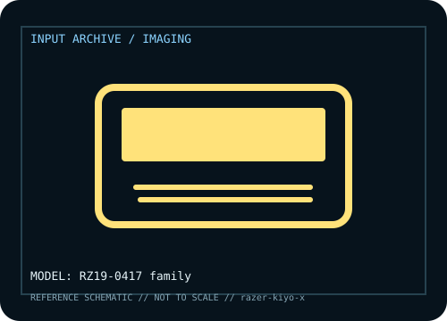

[ IMAGING AND AUDIO-CAPTURE PERIPHERALS // IDENTIFIED COMPONENT ]
Razer Kiyo X
USB webcam with 1080p capture and software-controlled image settings.

MODEL IDENTIFICATION: Manufacturer model / identifier: RZ19-0417 family. Compare the unit label, regional suffix, and revision against manufacturer documentation before repair or compatibility claims.
Model specifications
| Catalog subcategory | Imaging and audio-capture peripherals |
|---|---|
| Exact model / ID | RZ19-0417 family |
| Model-specific features | 1080p/30 or 720p/60, autofocus and foldable mount; lighting/app affect output. |
| Interface and host support | USB-A UVC; Synapse/capture apps expose settings; USB bandwidth and OS affect modes. |
| Revision / driver caveat | Distinct from ring-light Kiyo and Kiyo Pro; verify RZ19 code and focus behavior. |
Preservation and service notes
Keep lens clean, avoid hinge pressure, log autofocus/profile behavior; microfiber only.
Record the as-found label, accessories, host OS, driver or firmware version, and test method. Separate observed condition from published specifications; family-level claims are not proof of an individual unit's revision.
Manufacturer source
- Razer Kiyo X — manufacturer model pageModel-specific manufacturer reference for identifying specifications, regional SKU, and linked current support documentation.
Manufacturer pages can change or retire. Preserve the applicable manual and note its revision when documenting a physical device.